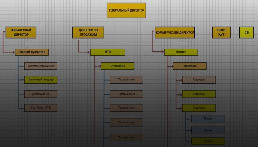
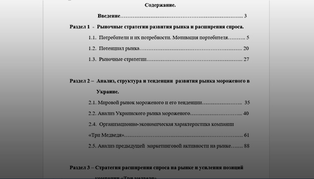

Фінансовий консалтинг
Фінансовий консалтинг - це професійна кваліфікована допомога керівництву компаній в підвищенні фінансової ефективності діяльності підприємства. Залежно від потреб конкретної компанії мета фінансового консалтингу може варіюватися від надання разових консультацій з питань методології бухгалтерського обліку до розробки повномасштабної довгострокової стратегії підприємства. Об'єктом фінансового консалтингу може бути як поточний стан справ і оптимізація наявних ресурсів, так і перспективи підприємства, можливості розширення та експансії бізнесу і максимізація прибутку.

Бізнес-план
Бізнес план – це документ, що дає розгорнуте обґрунтування проекту і можливість всебічно оцінити ефективність прийнятих рішень, планованих заходів, відповісти на питання, чи варто вкладати гроші в даний проект.

Аудит бізнесу
Аудит бізнесу - це систематична, неупереджена перевірка та оцінка ринку, діяльності конкурентів, а також маркетингових дій підприємства. З його допомогою ми визначаємо сильні і слабкі сторони бізнесу, щоб вибрати кращі шляхи для подальшої оптимізації. Результатом аудиту та аналізу є звіт про поточну ситуацію і рекомендації, з яких процесів варто почати опис і оптимізацію, і яким чином їх поліпшити.

Аналітика
Дослідження ринку - послідовні дії по збору інформації про ринки або споживачах. Є дуже важливим компонентом при виробленні стратегії бізнесу.
Дослідження ринку має дати відповіді на питання, що споживачі хочуть, чого потребують, чому довіряють. Дослідження може включати в себе також вивчення дій споживачів, поведінку на різних етапах процесу покупки і т.д.